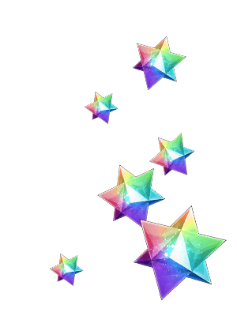
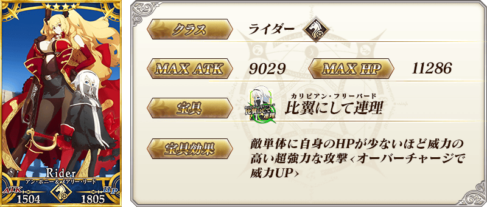
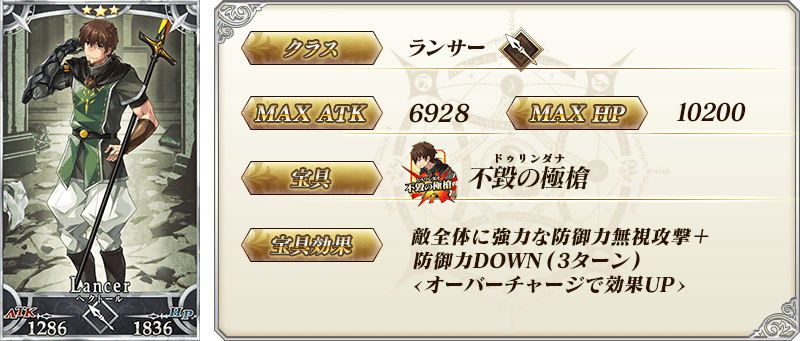
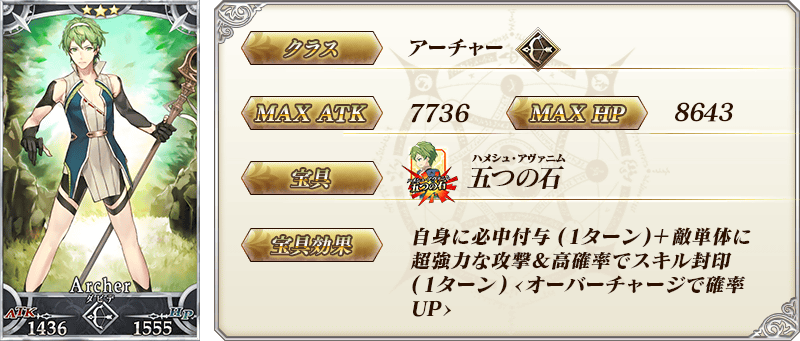
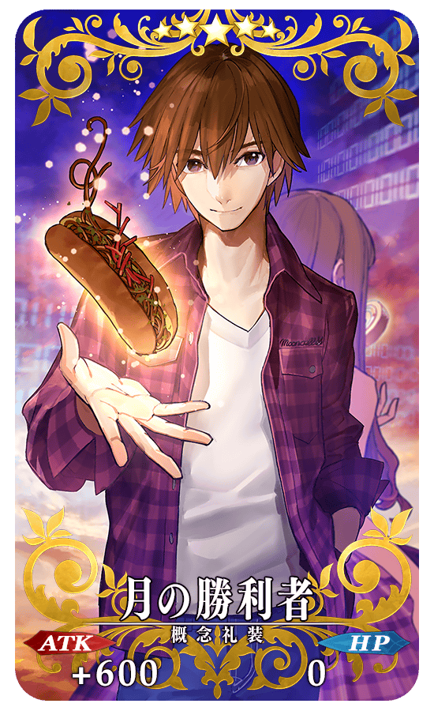
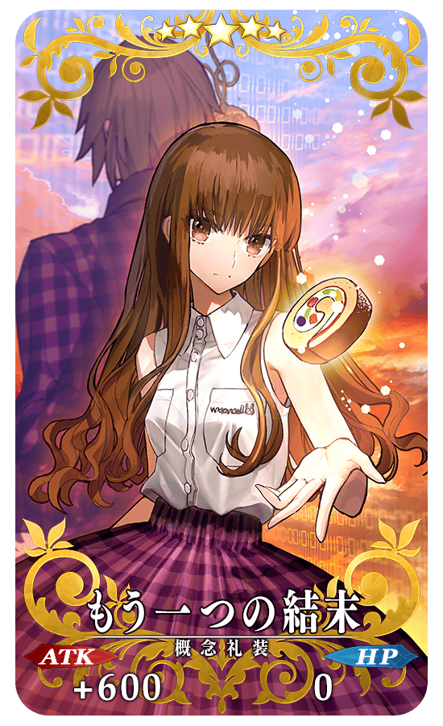
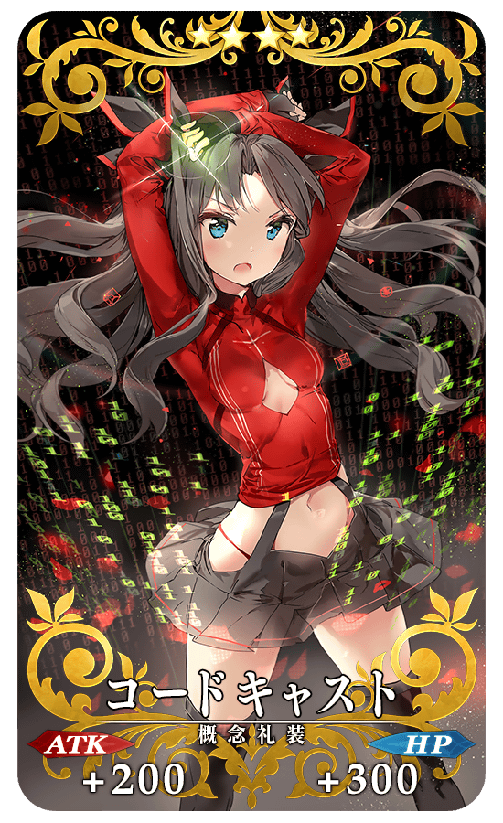
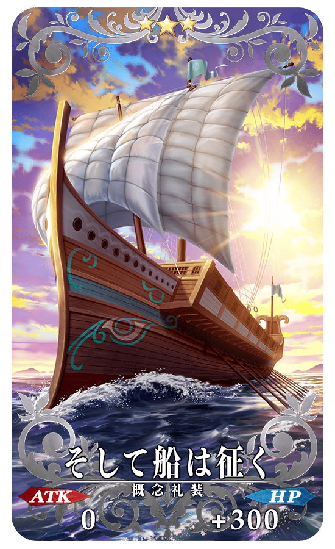

◆公開日時◆
2015年11月5日（木）19：00～
◆三章、ついに開幕◆
「第三特異点 封鎖終局四海 オケアノス」が開幕。舞台は、大航海時代。新たに登場するサーヴァントたちとの手に汗握る戦いが繰り広げられます。
◆開放条件◆
「第二特異点 永続狂気帝国 セプテム」をクリアすると開放されます。

◆三章公開記念プレゼント◆
◆対象者◆
◆配布期間◆
三章公開を記念しまして、マスターの皆様に聖晶石を10個プレゼントいたします！
◆対象者◆
11/5(木) 13:59時点で「Fate/Grand Order」をプレイされていたすべてのお客様
◆配布期間◆
2015年11月6日(金)AM4:00～2016年3月31日(木)23:59


◆オケアノスピックアップ召喚期間◆
期間：2015年11月5日（木）19：00～11月18日（水）13:59
三章公開を記念して、ストーリー召喚にてオケアノスピックアップ召喚を開催！
※第三特異点に到達していない状態でもオケアノスピックアップ召喚を行えます。
「第三特異点 封鎖終局四海 オケアノス」で活躍するサーヴァント「★5（SSR）フランシス・ドレイク」、「★4（SR）アン・ボニー＆メアリー・リード」、「★3（R）エウリュアレ」、 「★3（R）ヘクトール」、 「★3（R）ダビデ」が初登場！
更に、新規概念礼装「★5（SSR）月の勝利者」、「★5（SSR）もう一つの結末」、「★4（SR）コードキャスト」、 「★3（R）そして船は征く」も初登場。
ピックアップ期間は、上記のサーヴァント、概念礼装の出現確率がアップ！
※上記のサーヴァント・概念礼装は、ピックアップ召喚期間終了後もストーリー召喚にて排出されます。
また、今回のオケアノスピックアップ召喚以降の★3（R）サーヴァントと★3（R）概念礼装の提供割合が変更になります。
★3（R）サーヴァント 20％⇒40％
★3（R）概念礼装 60％⇒40％
※詳しくは、聖晶石召喚画面左下の「召喚詳細」をご確認ください。
10回召喚では★4（SR）以上1枚確定と★3（R）以上のサーヴァント1騎確定！
※★4（SR）以上確定にはサーヴァントと概念礼装が含まれます。
三章公開を記念して、ストーリー召喚にてオケアノスピックアップ召喚を開催！
※第三特異点に到達していない状態でもオケアノスピックアップ召喚を行えます。
「第三特異点 封鎖終局四海 オケアノス」で活躍するサーヴァント「★5（SSR）フランシス・ドレイク」、「★4（SR）アン・ボニー＆メアリー・リード」、「★3（R）エウリュアレ」、 「★3（R）ヘクトール」、 「★3（R）ダビデ」が初登場！
更に、新規概念礼装「★5（SSR）月の勝利者」、「★5（SSR）もう一つの結末」、「★4（SR）コードキャスト」、 「★3（R）そして船は征く」も初登場。
ピックアップ期間は、上記のサーヴァント、概念礼装の出現確率がアップ！
※上記のサーヴァント・概念礼装は、ピックアップ召喚期間終了後もストーリー召喚にて排出されます。
また、今回のオケアノスピックアップ召喚以降の★3（R）サーヴァントと★3（R）概念礼装の提供割合が変更になります。
★3（R）サーヴァント 20％⇒40％
★3（R）概念礼装 60％⇒40％
※詳しくは、聖晶石召喚画面左下の「召喚詳細」をご確認ください。
10回召喚では★4（SR）以上1枚確定と★3（R）以上のサーヴァント1騎確定！
※★4（SR）以上確定にはサーヴァントと概念礼装が含まれます。






★★★★★SSR
スキル
月の勝利者
ATK 600（最大：2400） HP 0スキル
自身のBusterカードの性能を10％アップ＆クリティカル威力を20％アップする

★★★★★SSR
スキル
もう一つの結末
ATK 600（最大：2400） HP 0スキル
自身のArtsカードの性能を10％アップ＆クリティカル威力を20％アップする

★★★★SR
スキル
コードキャスト
ATK 200（最大：750） HP 300（最大：1125）スキル
自身の攻撃力と防御力を25％アップする(3ターン)

★★★R
スキル
そして船は征く
ATK 0 HP 300（最大：1500）スキル
自身に毎ターンHP100回復状態を付与する
※ATKとHPの値が逆に表記されていたおりましたので、11/17（火）に修正いたしました。
※ATKとHPの値が逆に表記されていたおりましたので、11/17（火）に修正いたしました。
